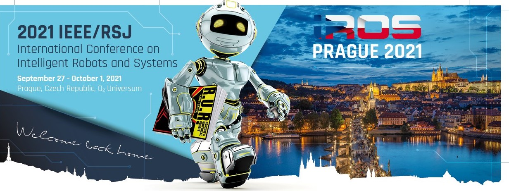
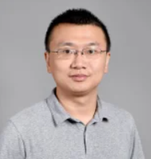
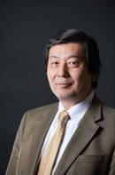
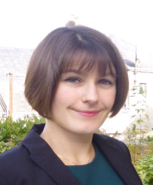

IROS2021 Workshop
Challenges and Opportunities of Human-robot Symbiosis: from Wearable Robots to Neurorobotics
September 27 - October 1, 2021
Prague, Czech Republic
Jump to: Topics, Organizers, Speakers, Schedules.
TOPICS:
- Wearable robotics
- Brain-computer interface
- Neurorobotics
- Human-robot interaction
- Design and mechanism of wearable robots and wearable interfaces
- Sensing and perceptions
- Rehabilitation and Assistive Robotics
ORGANIZERS:

Hao Su |

Wenlong Zhang |
Myunghee Kim |
|

Harry Asada |

Pauline Maurice |
|
SPEAKERS:
Michelle Johnson, Associate Professor
Department of Physical Medicine and Rehabilitation, University of Pennsylvania
Bio: Prof. Johnson's research is mainly in the area of robot-mediated rehabilitation. She is focused on the investigation and rehabilitation of dysfunction due to aging, neural disease, and neural injury. I am particularly interested in 1) exploring the relationships between brain plasticity and behavioral/motor control changes after robot-assisted interventions; 2)quantifying motor impairment and motor control of the upper limb in real world tasks such as drinking; and 3) defining the methods to maintain therapeutic effectiveness while administering local and remote, robot-mediated interventions.
Harry Asada, Professor
Department of Mechanical Engineering, Massachusetts Institute of Technology
Bio: Professor Asada is currently working on a project called, "Robot-on-the-Human: Supernumerary Robotic Limbs," which is a wearable robot that is perceived to be part of the human body. Other projects include one on aircraft manufacturing sponsored by Boeing and another sponsored by Sumitomo Heavy Industries.

Robert Gregg, Associate Professor
Department of Electrical Engineering and Computer Science, University of Michigan
Bio: Dr. Gregg directs the Locomotor Control Systems Laboratory, which conducts research on the control mechanisms of bipedal locomotion with applications to wearable and autonomous robots. He is a recipient of the Eugene McDermott Endowed Professorship, NSF CAREER Award, NIH Director’s New Innovator Award, and Burroughs Wellcome Fund Career Award at the Scientific Interface.
Chang Nam, Professor
Industrial and Systems Engineering, North Carolina State University
Bio: Dr. Nam teaches and conducts basic and applied research in human factors and ergonomics engineering to advance the science of Human-Computer Interaction (HCI) with a broad perspective on the application of systems and information engineering to human-centered technologies, including brain-computer interfaces and rehabilitation engineering.
Pauline Maurice, Research Scientist
Lorraine Research Laboratory in Computer Science and its Applications
Bio: Maurice is a CNRS research scientist in LORIA (Nancy, France) working in the LARSEN team.Her research focuses on experimental and computational human motion analysis in the context of physical human-robot interaction. This research serves to develop human-centered designs and controllers for collaborative robots, with a focus on ergonomics.
Hao Su, Assistant Professor
Department of Mechanical Engineering, City University of New York, City College
Bio: Hao Su is the Director of the Lab of Biomechatronics and Intelligent Robotics (BIRO). He has been an associate editor for ICRA, IROS, EMBC, and RA-letter. Dr. Su received the US National Science Foundation CAREER Award, Toyota Mobility Challenge Discover Award, the Best Medical Robotics Paper Runner-up Award in the IEEE International Conference on Robotics and Automation (ICRA), and Philips Innovation Transfer Award. He received the Advanced Simulation & Training Award from the Link Foundation and Dr. Richard Schlesinger Award from the American Society for Quality. His work is published in ASME/IEEE Transaction on Mechatronics, IEEE Transactions on Biomedical Engineering, Science Robotics, Science Advances, and Nature Machine Intelligence.
Wenlong Zhang, Assistant Professor
Robotics and Intelligent Systems, Arizona State University
Bio: Zhang's research interests lie in the design, modeling, and control of cyber-physical systems, with applications to healthcare, robotics and manufacturing. He received several honors and awards, including Berkeley Fellowship for Graduate Study from UC Berkeley, Best Paper Award in the 2013 IEEE Real-time System Symposium, and Semi-Plenary Paper Award Finalist in the 2012 ASME Dynamic Systems and Control Conference.
Myunghee Kim, Assistant Professor
Department of Mechanical and Industrial Engineering, University of Illinois at Chicago
Bio: Dr. Kim’s primary focus is the development of assistive robotic devices for improving mobility and quality of life through integrative approaches of numerical dynamic models, machine learning techniques, experimental testbeds, and controlled human-subject experiments.
Herman van der Kooij, Professor
Department of Biomechanical Engineering, University of Twente
Bio: Prof. Herman's expertise and interests are in the field of human balance and motor control, adaptation, and learning. He combines experiments with neuro-mechanical models. His group designed various rehabilitation, wearable robots, diagnostic, and assistive robotics. Examples are the gait rehabilitation robot LOPES and the Mindwalker wearable exoskeleton.
Matei Ciocarlie, Associate Professor
Department of Mechanical Engineering, Columbia University
Bio: Dr. Ciocarlie's main interest is in robotics, looking to discover how artificial mechanisms can interact with the world as skillfully as biological organisms. Matei’s current work focuses on robot motor control, mechanism and sensor design, planning and learning, all aiming to demonstrate complex motor skills such as dexterous manipulation.
Raymond Kai-yu Tong, Professor
Department of Biomedical Engineering, The Chinese University of HongKong
Bio: Prof. Raymond's research interests include Rehabilitation Robotics (e.g. Hand of Hope), Brain-Computer Control Interface (BCI), Neural Engineering, Functional Electrical Stimulation(FES) and Cognitive Assessment Software. Projects have been funded by Innovation and Technology Fund and UGC CERG/GRF as principal investigator. His research, innovation and service have received Awardee of the 2013 Ten Outstanding Young Persons (Hong Kong)